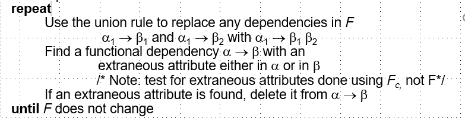
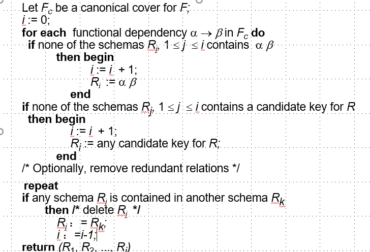

# 第一章 数据库系统
# 操作及其语法
# Join
# Nature Join
# Rename
# 第四章 Intermediate SQL 中级 SQL
# Joined Relations
在 SQL 中，"Joined Relations"（连接关系）是指通过某种条件将两个或多个表的数据结合起来，以便查询出所需的信息。连接操作是 SQL 查询中非常重要的一部分，尤其在处理复杂查询时更为常见。以下是几种常见的连接类型：
内连接（INNER JOIN）： 内连接是最常用的连接类型。它返回两个表中满足连接条件的记录。只有在两个表中都有匹配的记录时，结果集才会包含这些记录。
左连接（LEFT JOIN）： 左连接返回左表中的所有记录，以及右表中满足连接条件的记录。如果右表中没有匹配的记录，则结果集中包含左表中的记录，并且右表的字段为 NULL。
右连接（RIGHT JOIN）： 右连接与左连接类似，但返回右表中的所有记录，以及左表中满足连接条件的记录。如果左表中没有匹配的记录，则结果集中包含右表中的记录，并且左表的字段为 NULL。
全连接（FULL JOIN）： 全连接返回两个表中的所有记录，当其中一个表中没有匹配的记录时，结果集中包含 NULL 值。
交叉连接（CROSS JOIN）： 交叉连接返回两个表的笛卡尔积，即每个表中的每一行都与另一个表中的每一行进行组合。
自然连接（NATURAL JOIN）： 自然连接是一种特殊的内连接，它自动基于两个表中同名且同类型的列进行连接。
# 外连接 outer Join
当其中一个表中没有匹配的记录时，如果希望连接另一个表中的所有成员，但由于某成员在另一个表中没有记录，导致无法匹配，无法出现在新创建的表中。
outer join：在通过在结果中创建包含空值元组的方式，保留那些丢失的元组。
- left outer join: 只保留 outer join 左边的关系中的元组
1
2select *
form table1 left outer join table2 on table1.column_name = table2.column_name; - right outer join: 只保留 outer join 右边的关系中的元组
- full outer join: 保留 outer join 两边的关系中的元组
# 内连接 inner join
不保留那些没有匹配的元组，只保留那些匹配的元组。也就是普通连接，可用 join 替代 inner join
1 | SELECT column_name(s) |
# 视图 view
不实际存在的虚拟的关系。存在理由：让用户看到所有的实际存在的逻辑关系可能是不安全的，需要虚拟的关系来隐藏某些隐私的关系和数据。
视图：任何不是逻辑模型的一部分，作为虚关系对用户可见的关系称为试图。
1 | create view v as |
view 不进行预计算和储存，当数据库存储与 view 相关的查询表达式，view 被访问时，才会执行查询语句，因此 view 是在需要的时候被创建的。
# 使用 view
数据库不提前存储 view 的数据，只有在访问到 view 时，实时地访问 view 内的查询语句，以防止 view 数据落后。
# 物化视图
materialized view：物化视图保证定义物化视图的关系被修改时，定义视图的查询结果也会相应地改变。
materialized view maintenance：维护物化视图更新的过程
# 视图更新
使用视图的困难在于：如果只是用 view 进行查询操作，没有问题；如果用 view 来进行增删改操作，困难就出现了，我们该如何将 view 的修改映射为实体关系的修改。
为方便理解，下面将举实际例子：
1 | create view facully as |
向 view 中插入新的数据：
1 | insert into facully |
数据库会实际想 instructor 插入
1 | insert into instructor |
但是如果 view 有多个关系得来时，上述方法将不可能实现。
# transaction 事务
查询和更新语句的序列组成。
- commit work：提交操作的结果
- rollback work：回滚未提交的操作的结果
通过这样实现原子操作：atomic op
# 完整性约束
参照完整性：表示的是两个关系之间的联系、是表与表之间的引用。对应的就是外键。
实体完整性：用来唯一表示实体的要求。不能为空，需要唯一确认，表示的是这一条记录的实体的完整唯一，通常用主键表示，不为空且不重复
某个表使用另一张表的主键作为属性，成为外键，表示两张表之间存在引用的关系，引用方依赖于被引用方。
保证数据一致性
- not null 约束
1
name varchar(20) not null
- unique 约束：不允许上述属性出现两个元组 zhixi
unique(Aj1, Aj2, ... , Ajm) - check
# 第八章 Relational Database Design
# Combine Schemas And Smaller Schemas （decompose Schemas）
Combine Schemas
将多个关系合并为一个关系，也可以说是将多个数据库模式合并为一个数据库模式这样做的好处是可以减少关系之间的连接操作，提高查询效率。Decombine Schemas
最小化模式的数量，是 Combine Schemas 的反操作，将一个关系分解为多个关系，减少数据冗余，提高查找效率。
functional dependency： 函数依赖，是指一个属性的值依赖于另一个属性的值，这种依赖关系是一种约束，是一种完整性约束。及一对一的关系。dept_name -> buildingdept_name -> budget
lossy decomposition：在分解关系时，如果分解后的关系不能恢复原来的关系，那么这种分解就是 lossy decomposition。
lossless join decomposition：在分解关系时，如果分解后的关系能够通过连接操作恢复原来的关系，那么这种分解就是 lossless join decomposition。
good: 一个关系模式 R 的分解 D 是 good 的，如果对于 R 的每一个实例 r，通过 D 的连接操作能够恢复 r。不存在冗余的情况。如何实现 good 的分解呢？可以使用 BCNF 分解。good 的分解定义是无损分解（使用 BCNF）和依赖保存（使用 3NF）。需要进行权衡。
# First Normal Form
域的原子性（Domain is atomic）：关系模式的每一个属性都是不可再分的原子值。如果所有的域的所有属性都是原子的，那么关系模式就是第一范式（First Normal Form）的。
Non-atomic values complicate storage and encourage
redundant (repeated) storage of data. 非原子值使存储复杂化，并鼓励数据的冗余（重复）存储。
Atomicity 是域如何定义其组成的元素的，比如一个域是 String，那么这个 String 是不可再分的，是原子的。
- Functional Dependengy 函数依赖
用于描述关系模式中属性之间的依赖关系。具体来说，函数依赖是指在一个关系模式中，如果属性集 X 的值唯一地决定了属性集 Y 的值，那么称 Y 函数依赖于 X，记作 X -> Y。函数依赖是键的概念（notion）的推广（generalization）。通俗点说，就是一个 X 的值不能决定多个 Y 的值，但一个 Y 的值可以由多个 X 的值决定。
例子
假设有一个关系模式 R，包含属性 A, B, C。如果对于 R 的每一个实例 r 中的任意两个元组 t1 和 t2，只要 t1 [A] = t2 [A]，就有 t1 [B] = t2 [B]，那么我们说 B 函数依赖于 A，记作 A -> B。
形式定义
给定一个关系模式 R 和它的一个实例 r，属性集 X 和 Y 是 R 的子集。如果对于 r 中的任意两个元组 t1 和 t2，只要 t1 [X] = t2 [X]，就有 t1 [Y] = t2 [Y]，那么称 Y 函数依赖于 X，记作 X -> Y。
完全函数依赖和部分函数依赖
完全函数依赖：如果 Y 函数依赖于 X，并且 X 的任何真子集都不能决定 Y，那么称 Y 完全函数依赖于 X。
部分函数依赖：如果 Y 函数依赖于 X，但 X 的某个真子集也能决定 Y，那么称 Y 部分函数依赖于 X。
传递函数依赖
如果 X -> Y，且 Y -> Z，那么根据传递性，可以得到 X -> Z。这种依赖关系称为传递函数依赖。
作用
函数依赖在数据库规范化过程中起着关键作用，通过分析和消除不必要的函数依赖，可以减少数据冗余，提高数据一致性。
示例
假设有一个学生关系模式 Student (StudentID, Name, Major, Advisor)，其中：
StudentID -> Name, Major, Advisor
Name -> Major
在这个例子中，StudentID 唯一确定了学生的 Name、Major 和 Advisor，而 Name 唯一确定了 Major。
# Third Normal Form
Boyce-Codd Normal Form (BCNF)
Boyce-Codd Normal Form（BCNF）是数据库规范化的一种形式，它是第三范式（3NF）的一个特例。BCNF 是指一个关系模式 R，对于 R 的每一个非平凡函数依赖 X -> Y，X 都是 R 的候选键。换句话说，如果一个关系模式 R 的每一个非平凡函数依赖都是由 R 的候选键决定的，那么 R 就是 BCNF 的。3NF
一个关系模式 R 是 3NF 的，如果 R 中存在的每一个函数依赖 a -> b, 至少包含以下三种情况：- b 属于 a
- a 是 R 的 superkey
- 对于 b-a 的每一个属性 A 是 R 的 candidate key
如果一个关系模式 R 是 BCNF，那么 R 一定是 3NF 的。但是反过来不一定成立，即 3NF 不一定是 BCNF。
- superkey and candidate key
- 解释如下：
K 是关系模式 R 的超键（superkey）当且仅当 K -> R：
- 这意味着 K 中的属性集合可以唯一地标识关系模式 R 中的每一个元组。换句话说，K 的值可以唯一确定 R 中的每一个记录。
K 是关系模式 R 的候选键（candidate key）当且仅当：
- K -> R，并且
- 对于 K 的任何真子集 α，都不存在 α -> R：
- 这意味着 K 不仅是一个超键，而且是最小的超键。即，K 中的任何一个属性都不能被去掉，否则它将不再是一个超键。
总结：
- 超键是能够唯一标识关系模式中每一个元组的属性集合。
- 候选键是最小的超键，即不能再去掉任何属性的超键。
** 函数依赖是平凡的（trivial），如果被关系的所有实例所满足。** 换句话说，右边的属性是左边属性的子集时，函数依赖是平凡的。
- 函数依赖的应用
- 检查关系模式是否符合提供的一组函数依赖。如果关系模式 r 满足函数依赖集合 F，那么 r satisfist F。
- F holds on r: 如果关系模式 r 满足函数依赖集合 F，那么 F holds on r。
# Lossless-join Decomposition
如何定义一个关系模式的分解是 lossless-join 的呢？
一个关系模式 R 的分解 D 是 lossless-join 的，如果对于 R 的每一个实例 r，通过 D 的连接操作能够恢复 r。换句话说，如果 R 通过 D 的连接操作能够恢复，那么 R 的分解 D 是 lossless-join 的。
需要满足下面的函数依赖:
* R1 ∩ R2 -> R1
* R1 ∩ R2 -> R2
注意：这些条件是必要条件，但不是充分条件。也就是说，如果一个分解满足这些条件，那么它是 lossless-join 的，但反过来不一定成立。
# Closure of a set of functional dependencies 依赖闭包
F + 用来表示 F 的闭包，即 F 的所有推导出来的函数依赖集合。F + 是 F 的最小超集，满足以下条件：
* F+ 包含 F 中的所有函数依赖
* F+ 包含 F 中的所有推导出来的函数依赖
如何找到 F 的闭宝呢？可以通过重复的使用 Armstrong's Axioms，知道不能再推导出新的函数依赖为止。
Armstrong's Axioms:
Reflexivity: 如果 X 是属性集合 A 的子集，那么 A -> X
Augmentation: 若 α→β 成立且 γ 为一属性集，则 γα→γβ
Transitivity: 如果 A -> B，B -> C，那么 A -> C
Procedure for Computing F+ 计算闭包范式
1
2
3
4
5
6
7
8repeat
for each functional dependency f in F+
apply reflexivity and augmentation rules on f
add the resulting functional dependencies to F +
for each pair of functional dependencies f1and f2 in F +
if f1 and f2 can be combined using transitivity
then add the resulting functional dependency to F +
until F + does not change any further
Addtional rules:
- Union: 如果 A -> B 和 A -> C，那么 A -> BC
- Decomposition: 如果 A -> BC，那么 A -> B 和 A -> C
- Pseudotransitivity: 如果 A -> B 和 BC -> D，那么 AC -> D
均可以使用 Armstrong's Axioms 来推导。
# Closure of Attribute Sets
定义：a+ = {A: a -> A holds under functional dependencies F}
- 计算 a + 算法
1
2
3
4
5
6result := a;
while (changes to result) do
for each b -> y in F do
begin
if b 为 result的子集 then result := result U y
end
functional dependency and attribute closure:
Let R be a relation schema with a functional dependency F, and let A be a set of attributes of R. The closure of A under F, denoted A+, is the set of attributes B such that A -> B holds under F.
应用：判断一个属性集合是否是一个超键，可以计算它的闭包，如果闭包包含了所有的属性，那么这个属性集合就是一个超键。
Attribute Closure and superkey
应用上面介绍的理论就可以判断 a 是否为 R 的一个超键，只需要计算 a 的闭包，如果闭包包含了 R 的所有属性，那么 a 就是 R 的一个超键。Attribute Closure and functional dependency Closure
计算函数依赖集合 F 的闭包- F -> F+
- 对于 R 中的每个属性 y，计算 y 闭包 y+
- 对于 y + 中的每个属性 s，计算 F+ <- F+ U
# Boyce-Codd Normal Form (BCNF)
上面已经初步介绍 BCNF，接下来在具备函数依赖闭包和属性闭包的基础上，进一步深入讨论 BCNF。
- 如何检查是否存在非平凡函数依赖 a->b，导致关系模式不符合 BCNF？
1
2compute a+
verify if a+ contains all attributes of R - 如何检查一个关系模式是否符合 BCNF？
1
2for each functional a -> b
check if it violates BCNF
- decomposing a schema into BCNF
思想：将一个关系模式分解为多个关系模式，使得每个关系模式都符合 BCNF。
存在非平凡函数依赖 a->b
将 R 分解为 R1 (a, b) 和 R2 (a, R - b)
- BNCF Decomposition Algorithm
已知 schema R 和 函数依赖 F。如果 R 不是 BCNF，说明存在坏函数依赖 a->b 导致，并且 a 不是超码和 b 的超集对于这样的坏函数依赖存在一下两种可能情况- a 并 b = 空集
- a 并 b != 空集
算法：
1 | result := {R}; |
# Third Normal Form：Motivation
定义 weaker normal form called 3NF
- 允许 redundancy
- functional dependencies can be checked on individual relations without computing a join
- 存在 lossless-join depency-preserving
判断：
A relation schema R 是 3NF 的，如果对于 R 的每一个非平凡函数依赖 a -> b，要么
- a 是 R 的超码
- b 是 a 的子集
- 对于每个属性 A in b-a 是 R 的候选码
如果 R 是 BCNF，那么 R 一定是 3NF 的。但是反过来不一定成立，即 3NF 不一定是 BCNF。
第三个条件是 BCNF 的 minimal relaxation，可以保证依赖保持（dependency preservation）
# Canonical Cover 规范覆盖
函数依赖集中存在不必要的函数依赖，可以通过规范覆盖来消除这些不必要的函数依赖。函数依赖的最小集被成为 F 的规范覆盖。
如果计算一个函数依赖集合的规范覆盖：

- Extraneous Attributes
函数依赖集合 F 中存在冗余的属性，可以通过规范覆盖来消除这些冗余的属性。冗余属性是指在函数依赖集合 F 中，存在一个函数依赖 a -> b，其中 b 中包含了 a 的真子集。
如何测试一个 Attribute 是否是冗余的呢？
- 计算 a+
- 如果 a+ 包含了 b，那么 b 是冗余的
# 3NF Decomposition Algorithm
